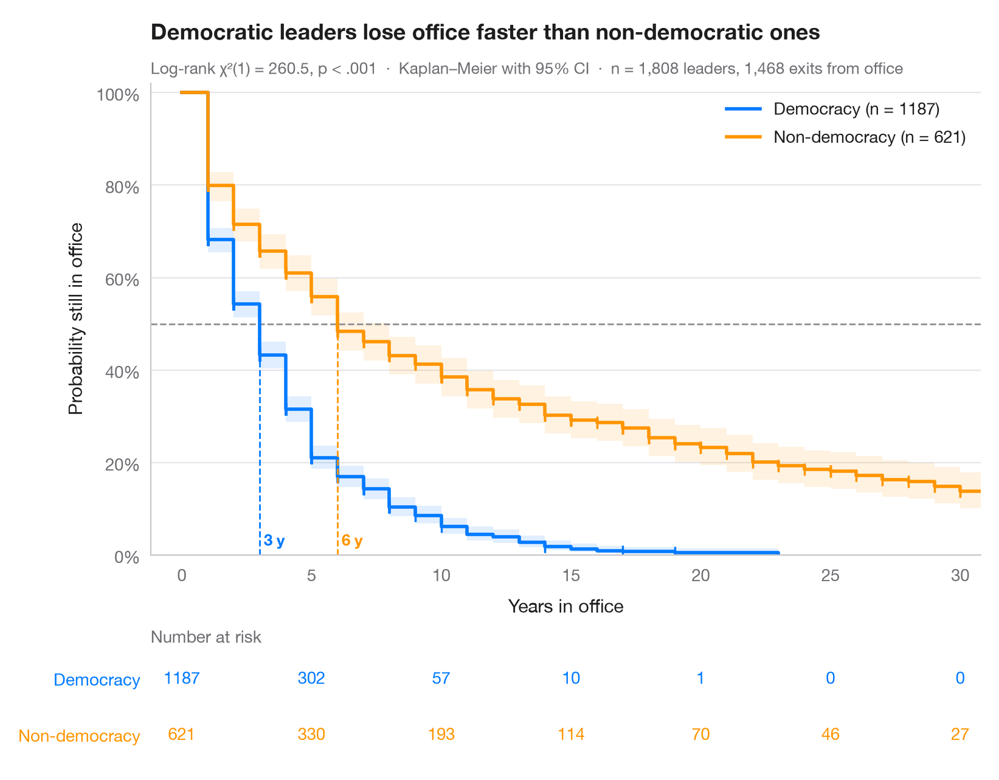

Kaplan–Meier curves
Survival curves with confidence bands, censoring marks, log-rank test and risk table.

The Kaplan–Meier estimator turns follow-up times — some ending in an event, some censored — into a step curve of the probability of surviving beyond each day. Shaded bands are pointwise 95% confidence intervals, small ticks mark censored patients, and dashed lines drop from 50% to the median survival of each group. The table underneath gives the number still at risk, which tells you how much data supports the tail of each curve.
Data are the NCCTG advanced lung-cancer trial (lifelines.datasets.load_lung).
Curves come from KaplanMeierFitter, the comparison from logrank_test.
import matplotlib.pyplot as plt
import numpy as np
from lifelines import KaplanMeierFitter
from lifelines.datasets import load_lung
from lifelines.statistics import logrank_test
# Data: survival in days after diagnosis, by sex
df = load_lung()
groups = {"Male": df[df.sex == 1], "Female": df[df.sex == 2]}
colors = ["#007AFF", "#FF9500"]
ticks = np.arange(0, 1001, 200)
fig, (ax, tab) = plt.subplots(2, 1, figsize=(8, 6.2), sharex=True,
gridspec_kw=dict(height_ratios=[4.2, 1]))
# Kaplan–Meier fit per group: step curve, CI band, censoring ticks, median line
for (name, d), c in zip(groups.items(), colors):
km = KaplanMeierFitter().fit(d.time, d.status, label=name)
sf, ci = km.survival_function_[name], km.confidence_interval_
ax.step(sf.index, sf, where="post", color=c, lw=2, label=f"{name} (n = {len(d)})")
ax.fill_between(ci.index, ci.iloc[:, 0], ci.iloc[:, 1], step="post", color=c, alpha=0.12, lw=0)
cens = d.loc[d.status == 0, "time"]
ax.plot(cens, km.survival_function_at_times(cens), "|", color=c, ms=7, mew=1.2)
med = km.median_survival_time_
ax.plot([med, med], [0, 0.5], ls="--", lw=1, color=c)
ax.text(med, 0.02, f" {med:.0f} d", color=c, fontsize=9.5, fontweight="semibold", ha="left")
# Number at risk under the plot
at_risk = [(d.time >= t).sum() for t in ticks]
for t, n in zip(ticks, at_risk):
tab.text(t, 1 - list(groups).index(name), n, ha="center", va="center", color=c, fontsize=10)
ax.axhline(0.5, color="#8E8E93", lw=1, ls="--", zorder=1)
ax.set(ylim=(0, 1.02), xlim=(-15, 1020), ylabel="Survival probability", xlabel="Days since diagnosis")
ax.tick_params(labelbottom=True)
ax.yaxis.set_major_formatter(plt.matplotlib.ticker.PercentFormatter(1))
ax.legend(loc="upper right")
# Log-rank test
lr = logrank_test(groups["Male"].time, groups["Female"].time,
groups["Male"].status, groups["Female"].status)
ax.set_title("Women with advanced lung cancer survive longer than men", pad=26)
ax.text(0, 1.02, f"Log-rank χ²(1) = {lr.test_statistic:.2f}, p = {lr.p_value:.3f} · "
f"Kaplan–Meier with 95% CI · n = {len(df)}, {df.status.sum()} deaths",
transform=ax.transAxes, fontsize=9.5, color="#6E6E73")
# Risk table styling
tab.set(ylim=(-0.5, 1.5), xticks=ticks)
tab.tick_params(labelbottom=False)
tab.set_yticks([1, 0], list(groups))
for lbl, c in zip(tab.get_yticklabels(), colors):
lbl.set_color(c)
tab.grid(False)
tab.spines[["left", "bottom"]].set_visible(False)
tab.set_title("Number at risk", fontsize=10, fontweight="normal", color="#6E6E73", pad=4)
plt.show()
Figures use the optional Statlas style: add plt.style.use("statlas.mplstyle") to match the look exactly.
How to cite
Statlas is created and maintained by Thierry Warin. If it helped your work, please cite it.
Warin, T. (2026). Kaplan–Meier curves. In Statlas: The Python Gallery of Statistical Graphics. https://warint.github.io/statlas/survival/kaplan-meier/
@misc{warin2026statlas,
author = {Warin, Thierry},
title = {Statlas: The Python Gallery of Statistical Graphics},
year = {2026},
howpublished = {\url{https://warint.github.io/statlas/}},
note = {Source code: https://github.com/warint/statlas}
}More in Survival analysis

Cox hazard ratios
Forest plot of a Cox proportional hazards model with HR, 95% CI and p-values.
survminer::ggforest()
Cumulative hazard
Nelson–Aalen cumulative hazard curves with 95% bands for three tumour grades.
survminer::ggsurvplot(fun = "cumhaz")
Adjusted survival curves
Cox model–predicted survival for several ages, other covariates held at their mean.
survminer::ggadjustedcurves()